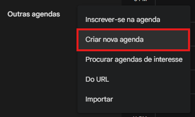
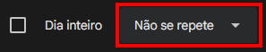
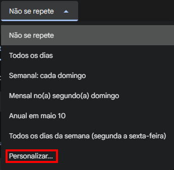
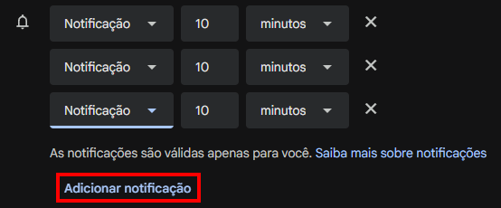
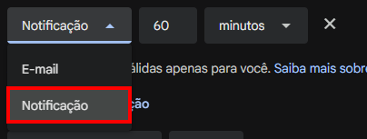
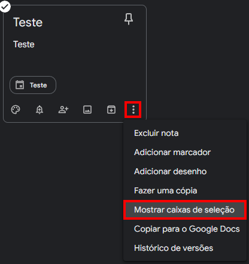
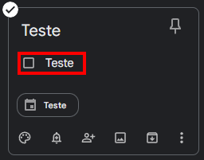

Acessibilidade e Inclusão Digital - Google Calendar
1. Configurações Iniciais
Ao criar uma conta no Google, você obtém acesso a diversas ferramentas gratuitas. Para este guia, utilizaremos o Google Calendar (ou Google Agenda). O processo é semelhante em navegadores como Chrome, Firefox ou Edge, mas utilizaremos o Google Chrome como base.
Se você ainda não tem uma conta, acesse google.com e clique em "Fazer login" no canto superior direito. Selecione "Criar conta" e siga as instruções. Com o login feito, acesse calendar.google.com.
No canto inferior esquerdo, na seção "Minhas agendas", você verá uma agenda padrão com o seu nome. Caso queira criar uma agenda nova para separar seus compromissos, clique no símbolo "+" em "Outras agendas".


Você será redirecionado para uma tela de configuração. Preencha o nome da agenda e, se desejar, uma descrição. Verifique se o fuso horário está correto e clique em "Criar agenda".
Ao retornar à tela principal, sua nova agenda aparecerá na lista. Para ativá-la e ver seus compromissos, certifique-se de que o quadrado ao lado do nome dela está marcado.
2. Criação de Novas Atividades
Para criar uma atividade, você pode simplesmente clicar em qualquer faixa de horário no dia desejado.
Outra opção é clicar e arrastar o cursor para definir um intervalo de tempo maior logo de início. Em ambos os casos, você pode clicar em "Mais opções" para configurar detalhes importantes.
Nesta tela, lembre-se de configurar os pontos essenciais:
- Título: Dê um nome claro à sua atividade.
- Horário e Repetição: Defina quando ocorre e se o evento se repete.
- Notificações: Escolha como quer ser lembrado.
- Agenda: Verifique se salvou na agenda correta (ex: "Agenda de Teste").
2.1 Entendendo Horários e Repetições
Os campos de data e hora são totalmente editáveis.
Embora o Google sugira intervalos de 15 minutos, você pode digitar manualmente o horário que desejar.
Dica de Aprendizado: No sistema de 12 horas:
- AM: Horários entre 00h00 e 11h59 (manhã).
- PM: Horários entre 12h00 e 23h59 (tarde e noite).
Se a atividade durar o dia todo, marque a opção "Dia inteiro". Para atividades que acontecem rotineiramente, clique em "Não se repete" para ver as opções ou selecione "Personalizar".


Na tela de personalização, você define os dias da semana e quando a repetição deve parar (em uma data específica ou após um número de ocorrências).
2.2 Configurando Notificações e Estilo
Para não esquecer seus compromissos, utilize o botão "Adicionar notificação". Você pode adicionar vários lembretes e escolher entre notificações no navegador/celular ou por e-mail.


Você também pode atribuir cores às atividades para organizá-las visualmente. Após finalizar, clique em "Salvar".
3. Navegação e Modos de Visualização
Você pode alterar a forma como enxerga sua agenda para facilitar o planejamento. No canto superior direito, clique em "Semana" para abrir outras opções, como "Dia", "Mês" ou "Programação".
4. Integração com o Google Keep
O keep.google.com funciona como um bloco de notas integrado. Você pode acessá-lo diretamente pelo ícone lateral direito no Calendar.
Para vincular uma nota a uma atividade, primeiro clique no evento na sua agenda e depois no ícone do Keep para criar a nota. A nota ficará vinculada automaticamente àquele compromisso específico.
Dentro do Keep, você ainda pode adicionar caixas de seleção para transformar suas notas em listas de tarefas práticas.


